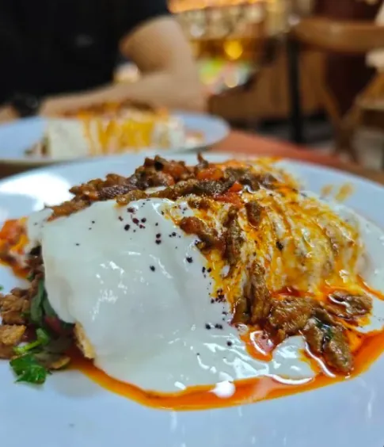
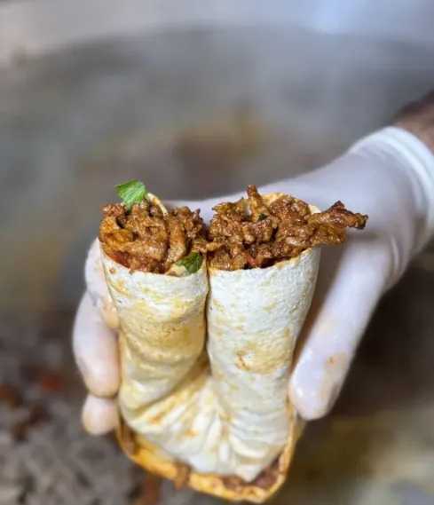
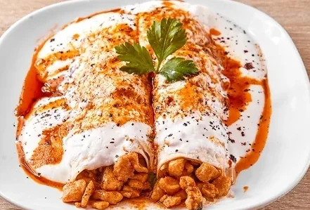
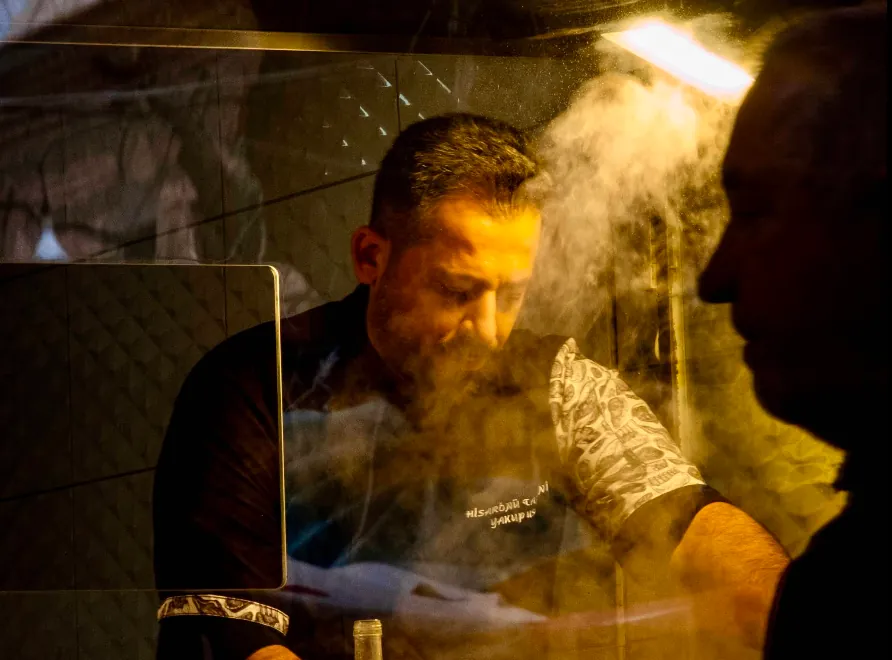

Yoğurtlu Et Tantuni
Taze pişmiş kuşbaşı et, ev yapımı yoğurt ve taze lavaş ile.
₺530Özenle seçilmiş malzeme, tavizsiz hijyen. Geleneksel ustalıkla hazırlanan bu şöleni, içiniz rahat ve damağınız şen olsun diye sofranıza taşıyoruz.
Telefon bilgisi yakında
Yol Tarifi AlYakup Usta'nın elinden çıkan, müşterilerimizin en çok tercih ettiği tantuniler.

Taze pişmiş kuşbaşı et, ev yapımı yoğurt ve taze lavaş ile.
₺530
Bol sebzeli, baharatlı, ince dürümde klasik tantuni lezzeti.
₺410
Yumuşacık tavuk, yoğurt ve kavrulmuş biberlerle.
₺400
Yakup Usta, Konak'ın bu küçük köşesinde yıllardır aynı titizlikle tantuni pişiriyor. Hijyen ve temiz et, işin başından beri değişmeyen tek kural. Amaç basit: müşteriye güzel bir tebessümle, sıcacık ve dürüst bir lezzet sunmak.
Müşterilerimizden biri bunu en iyi şekilde özetliyor:
"Yediğiniz en güzel tantuniye rakip olacaktır. Hijyenik, eti temiz, en lezzetli tantuni için tek adres."Hikayemizin Devamı
379 Google değerlendirmesi
"Tek kelimeyle efsane bir tantuni... İlgi alaka, müşteriye güzel tebessümleri ile çok güzel ve samimi bir işletme. Başarılarının devamını diliyorum."
"Yediğiniz en güzel tantuniye rakip olacaktır. Hijyenik, eti temiz, en lezzetli tantuni için tek adres."
Hisarönü'nde, Konak'ın göbeğinde; bir de Bostanlı'nın göbeğinde, Karşıyaka'da yanınızdayız.